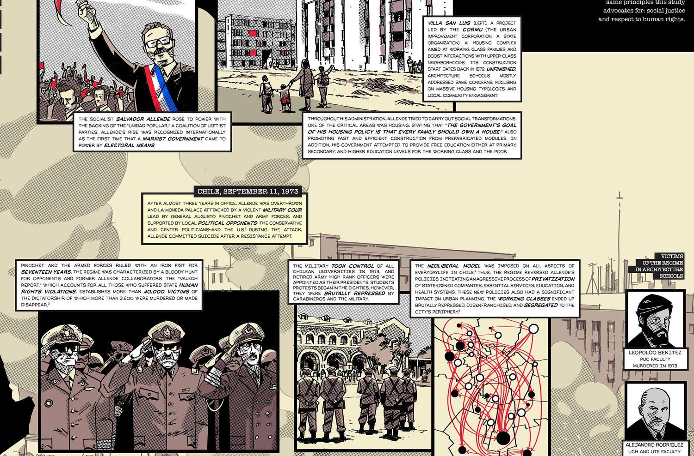
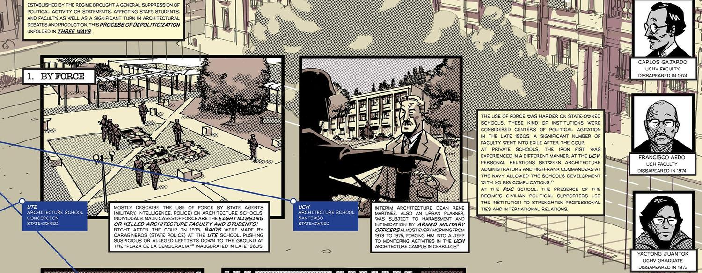

Architectural Education Under the Iron Fist
Los hallazgos de mi tesis doctoral contados como novela gráfica: cómo la dictadura intervino las escuelas de arquitectura en Chile entre 1973 y 1990, y cómo estudiantes y profesores la enfrentaron. Tercer lugar, Research Poster, Penn State Graduate Exhibition 2025.
The findings of my dissertation told as a graphic novel: how the dictatorship intervened Chile’s architecture schools between 1973 and 1990, and how students and professors faced it. Third place, Research Poster, Penn State Graduate Exhibition 2025.
Ilustración digital (Clip Studio Paint Pro)Digital illustration (Clip Studio Paint Pro)

